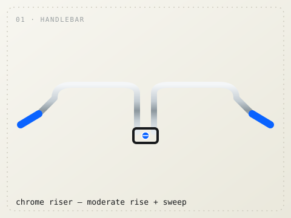
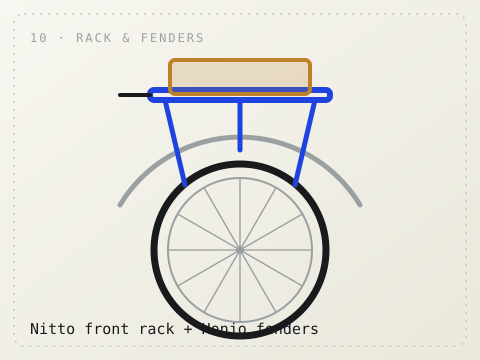

Turning a stripped early-’90s steel mountain bike into a considered city machine — raw & chrome frame, electric-blue accents. Each part below: what it is, the options to choose from, and what to buy. Verify the sizes, then build it in phases.
Blue Lug is a Tokyo shop that made the everyday city bike into a craft object: a neutral quality-steel frame — raw, chromed, or a single clean colour — built with Japanese boutique parts (Nitto, MKS) and given one repeating colour pop. Here the frame and cockpit stay quiet in chrome and raw steel, and a single electric blue does all the talking — echoed in the brake cables, the grips, and small anodised bolts. The bike stays calm; the accents sing.
01–11
The parts, one by one
Green label = keep & refresh what you have. Amber label = the upgrade worth making. Each part shows a main pick plus the options you can choose between. Prices are rough EU street prices for planning, not quotes.
Frame & finish
00
The foundation, and the part you don’t replace. A good True Temper steel frame, already stripped to bare metal — the look people pay framebuilders for. But raw steel rusts, so this is the one urgent job.
Keep · seal it soon
Two finishes fit the brief: a clear coat that keeps the raw-steel/chrome look, or a single bold colour if you’d rather let the parts do the talking. Either way, add Frame Saver inside the tubes.
do:clear-coat (raw look) or 1-colour powder + internal frame saver cost:≈ €60–120 at a coater · don’t leave bare over winter
Changes the whole character of the bike. You want a chrome riser that isn’t too wide — it rises up and sweeps back toward you, but gently (nowhere near 90°). That gives an upright, relaxed city position while the polished finish ties into the rest of the cockpit.
Upgrade · the personality choice
pick:chrome riser, ≈ 560–600 mm wide, ~30 mm rise, mild backsweep e.g.:Nitto B603 chrome · Soma Oxford · VO Tall Stack clamp:25.4 mm · grips:electric-blue pop · cost:≈ €55–85

Options — how much sweep? — tap to compare & shop ↗
The stem clamps the bar to the fork. Yours is a quill — it slots down into the fork rather than clamping outside it — because the bike has an old threaded headset. So you need a quill stem, in polished chrome to match the bar.
Upgrade · must match the headset
pick:Nitto Technomic — polished/chrome quill clamp:25.4 mm — matches the bar verify:quill Ø = 22.2 mm (1″) on this era · cost:≈ €55–70
The hidden bearing that lets the fork steer. Yours is an old 1″ threaded headset — that’s the whole reason the stem is a quill. If it turns smoothly, leave it. If it feels notchy or gritty (worn bearings), replace it — but keep the 1″ threaded type so the quill stem still fits.
Keep · replace only if notchy
keep type:1″ threaded (JIS, 25.4 mm) pick:Tange Seiki Passage — the reliable classic verify:1″ not 1⅛″ — measure the steerer · cost:≈ €30–60
The cheapest big decision, and the first place the electric blue lands. Grips are one of the three spots the pop colour repeats (grips · cables · bolts), so a bright lock-on grip here sets the whole tone.
Upgrade · first hit of the pop
pop:electric-blue lock-on grips(the pick) calm:cork or black leather if you want blue only on cables cost:≈ €20–45
Not a leather Brooks — an all-weather Brooks Cambium C17. It’s a vulcanised natural-rubber top with an organic-cotton cover: the Brooks look and comfort, but waterproof, maintenance-free, and ready to ride with no break-in. Perfect for a bike left outside and ridden in the rain.
The single biggest visual transformation. Swapping knobbies for Maxxis urban slicks reads “intentional build” from across the street — fat, smooth, fast-rolling rubber on the chrome rims. Run them with standard tubes.
Upgrade · highest impact per euro
pick:Maxxis Hookworm 26 × 2.5 — fat urban slick tubes:standard 26″ Schrader/Presta to match your rims verify:size marked 26 × 2.x on the casing · cost:≈ €30–45 each
Usually the ugliest thing on an old MTB. The fix is MKS — polished Japanese pedals in chrome-bright metal. A pair of electric-blue anodised bolts or a blue strap ties them into the accent story.
Upgrade · small part, real signature
pick:MKS Sylvan Touring + toe clips wide:MKS Allways / Lambda for flat-shoe comfort accent:blue anodised bolts · cost:≈ €55–90
Yours has a triple crank and old shifters. The tidiest move is a 1× conversion: keep one front chainring, drop the front derailleur and left shifter, run the existing rear gears. It declutters the cockpit and looks deliberate — and the chainring bolts are another spot for a blue pop.
Upgrade · simplify for the clean look
cheap:single ring + spacers on current crank boutique:polished Sugino crankset also:fresh chain + cassette · blue chainring bolts · cost:≈ €40–160
The old cantilevers stick out wide with a straddle cable across the front — too bulky for this build. The frame’s canti posts also take mini V-brakes: low-profile, tucked-in arms in polished chrome. Cleaner, stronger, and the brake cable runs in electric blue for the signature pop.
Upgrade · discreet chrome, blue cable
pick:polished mini V-brakes (e.g. Paul Mini Moto) levers:short-pull, matched to mini-V cable:electric-blue housing + blue pinch bolts pads:Kool-Stop salmon · cost:≈ €70–200 set
Everything above builds a tasteful bike. This is what makes it yours. The signature is the electric-blue cable housing plus mini repetitions of the same blue in the bolts — seat clamp, stem faceplate, bottle-cage and chainring bolts. Cheap, and the whole vibe.
Optional phase two, for the touring/rando end of the spectrum. A Nitto front rack with a small bag is almost a shop signature, and Honjo hammered alloy fenders make it look properly handbuilt — both in silver to sit with the chrome.
Optional · save for last
rack:Nitto front rack (≈ €110–150) fenders:Honjo hammered alloy (≈ €110–140)

Options — add either or both — tap to compare & shop ↗
Same parts, two directions. Pick one and commit — coherence is what makes these bikes look expensive.
Electric Blue Pop — the build here
Raw/chrome frame and cockpit, black Maxxis slicks, a slate C17. Then pick one electric blue and repeat it in exactly three places: grips, brake cables, bolts. Everything else stays chrome and quiet. Audition the pop below — swap it for any colour and it stays readable.
Chrome / rawframe, cockpit, brakes
BlackMaxxis slicks
SlateC17 saddle
Your popElectric blue
Audition the pop colour — repeated in grips · cables · bolts
GRIPS
CABLES
BOLTS
Raw & Chrome — quiet monochrome
If you’d rather skip colour entirely: clear-coated raw frame, all-chrome cockpit and mini-V brakes, black Maxxis slicks, a black C17, silver everywhere. No pop at all — just steel, chrome and black. Timeless, and impossible to get wrong.
Chrome / rawframe & cockpit
Blacktires & saddle
Silverbolts & bell
↳
What it costs
Rough EU planning figures. The starter trio gets you most of the visual change for very little.
Path
What’s in it
Est.
Starter trio
Maxxis slicks + blue grips + blue brake cables
< €130
Smart full build
chrome cockpit · C17 · Maxxis · MKS · 1× · mini-V · blue cables · bell